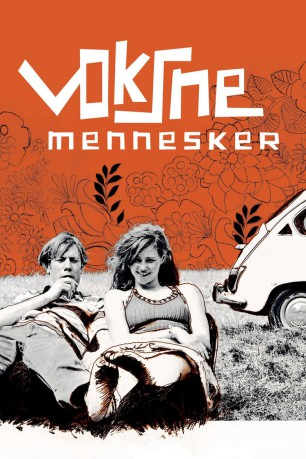

#11337 Dark Horse
 
 IMDB-Wertung: 7.2 / 10
IMDB-Wertung: 7.2 / 10  Tomatometer: 69
Tomatometer: 69  Metascore: 0
Metascore: 0 
Kopenhagen heute. Daniel und sein Freund Jacob, genannt Opa, sind beide in Francesca verknallt, die ab und zu dem tristen Alltag mittels Drogen entflieht. Daniel gewinnt schließlich ihr Herz, derweilen Opa sich auf seine Prüfung als FIFA-Schiedsrichter konzentriert. Als Francesca schwanger wird, will Daniel nach Mallorca abhauen, was er sich jedoch kurzfristig noch anders überlegt. Und dann ist da noch ein an Schlaflosigkeit leidender Richter, der den Faulenzer zu gemeinnütziger Arbeit verurteilt und aus seinem Job aussteigt. Auch der zweite Film von dem isländischen Regisseur Kári überzeugt und ist positiver als 'Noí albínói' (2003). Der in schwarzweiß gedrehte 'Dark Horse' zeichnet sich durch einen besonderen Humor aus, der in der dänischen Originalversion besonders betont wird.
Jahr: 2005
Dauer: 99 Minuten
FSK: 0
Land: Dänemark Studio: Neue Visionen FilmverleihTonspuren:
Untertitel:
Auflösung: SD (720x540) Größe: 998 MB
Genre: Drama, Komödie, Liebe
Regisseur: Dagur Kári
Drehbuch: Dagur Kári, Rune Schjøtt
Soundtrack: Dagur Kári
Darsteller:
- Jakob Cedergren als
 Nicolas Bro als
Nicolas Bro als - Tilly Scott Pedersen als
 Morten Suurballe als
Morten Suurballe als  Nicolaj Kopernikus als
Nicolaj Kopernikus als  Anders Hove als
Anders Hove als - Thomas W. Gabrielsson als
- Peder Thomas Pedersen als
- Angela Bundalovic als
- Peter Harton als
- Bodil Jørgensen als
- Kristian Halken als
- Michelle Bjørn-Andersen als
- Pauli Ryberg als
- Mikael Bertelsen als
- Asta Esper Hagen Andersen als
- Vera Gebuhr als
- Steen Budde-Lund als
- Michael Rasmussen als
- Nanna Schaumborg-Muller als
- Josephine Thorup Arnfred als
- Francisco Cañizares Quero als
- Ib Tardini als
- Simon Bonde als
- Knut Harvik als
- Asger Gottlieb als
- Willy Rye Hansen als
- Susan Jakobsen als
- Anne Bærskog Hauger als
- Marianne Møller als
- Jørgen Nielsen als
- Mads-Peter Schmidt als
- Børge Wulff als
- Keld Jensen als
- Rikki Winter als
- Morten Fisker als
- Peter Nørgaard als
- Rasmus B. Pedersen als
Datei: X:\2005(A-F)\Dark Horse (2005, FSK0, 720x540).mkv seit 19.06.2019
Festplatte: HD 2003-2004-2005(A-F)
 Es gibt insgesamt 49 Filme in der Gruppe '2005(A-F)'
Es gibt insgesamt 49 Filme in der Gruppe '2005(A-F)'